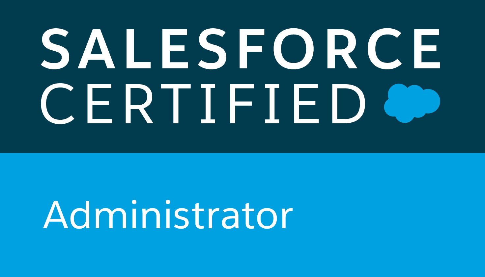
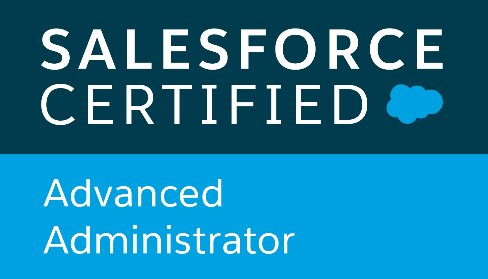
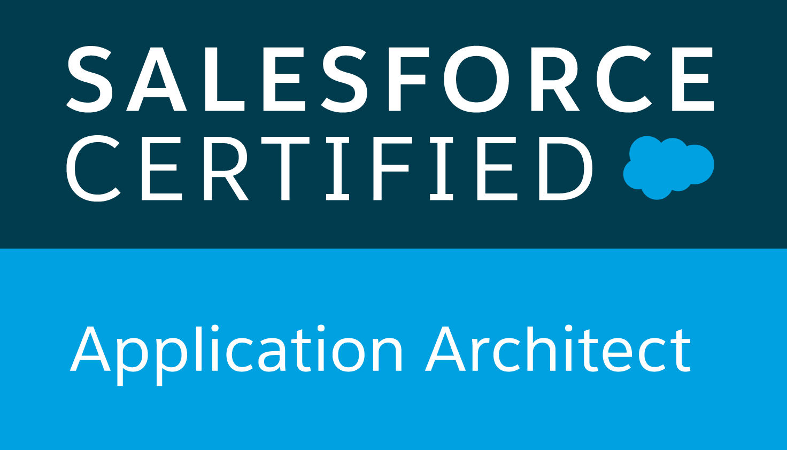
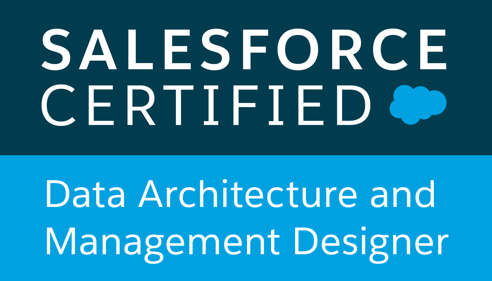

   
Griffin Melnick
Salesforce Architecture at Accenture | Technical Consulting | Inquistive Perfectionist
Github
LinkedIn
window.ontouchmove = function() { return false; } window.onorientationchange = function() { document.body.scrollTop = 0; }